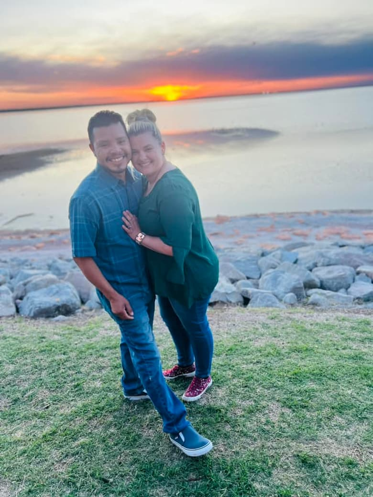

WDD 131: Dynamic Web Funamentals - Savanah Santos
About Me
My name is Savanah Santos. I was born and raised in Southern Utah. I love being surrounded by the mountains. I have been married for about 9.5 years. I met my husband while serving a mission for the Church of Jesus Christ of Latter Day Saints in Oklahoma. Thanks to my mission and marrying my husband, I am now fluent in the Spanish language. We now own a construction business called Santos Roofing & Construction. We don't have any children yet, but we have countless chickens of different ages, 1 rooster, 4 dogs, and 2 cats!
Utah
Utah is known for its scenic beauty. Surrounded by mountains, beautiful winters, and is also known as the behive state. It is also where the headquarters are located for the Church of Jesus Christ of Latter-Day Saints. There are many beautiful national parks with hiking trails. Many people travel to Utah to visit these locations.